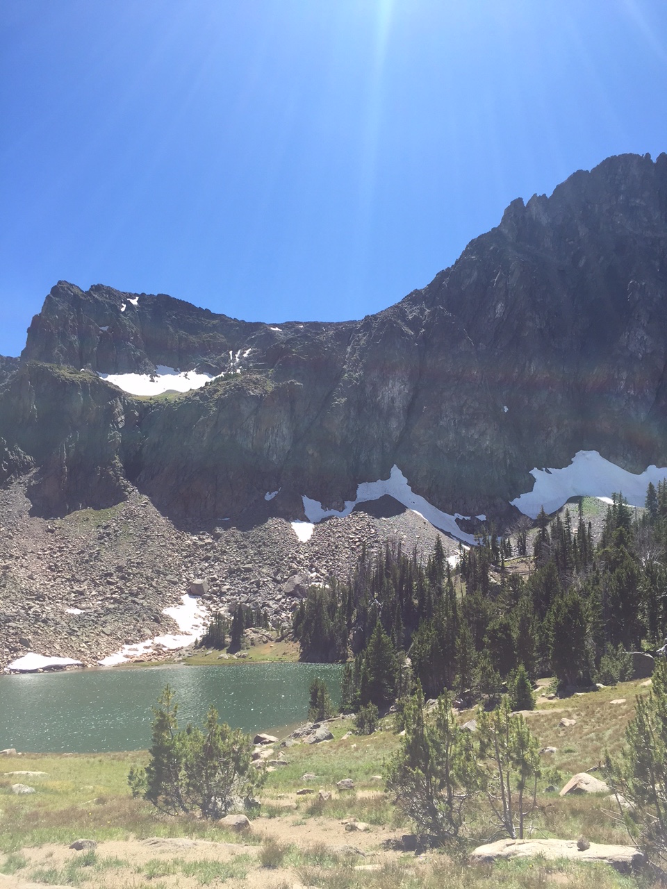
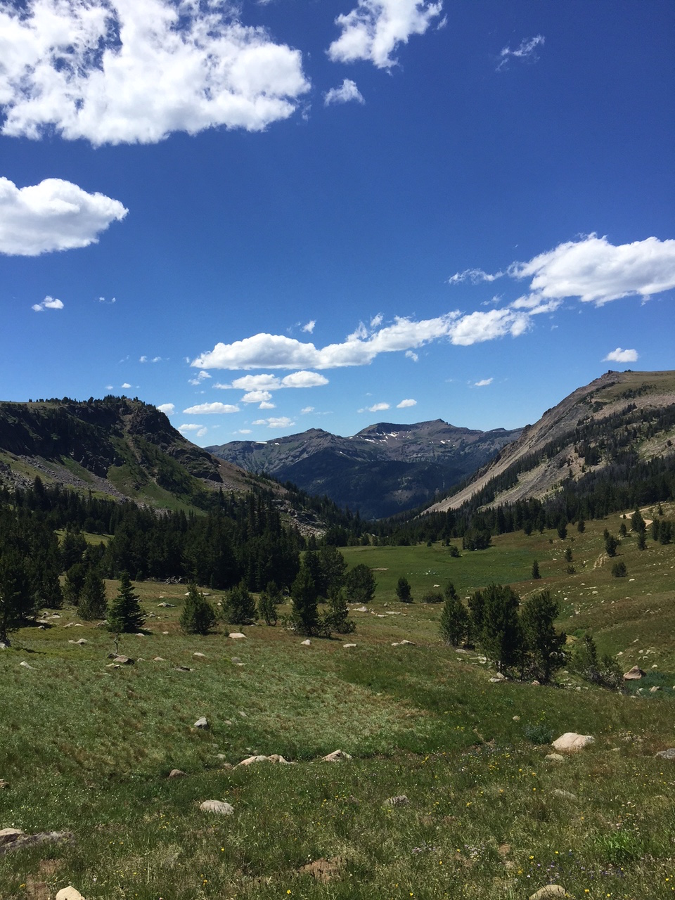
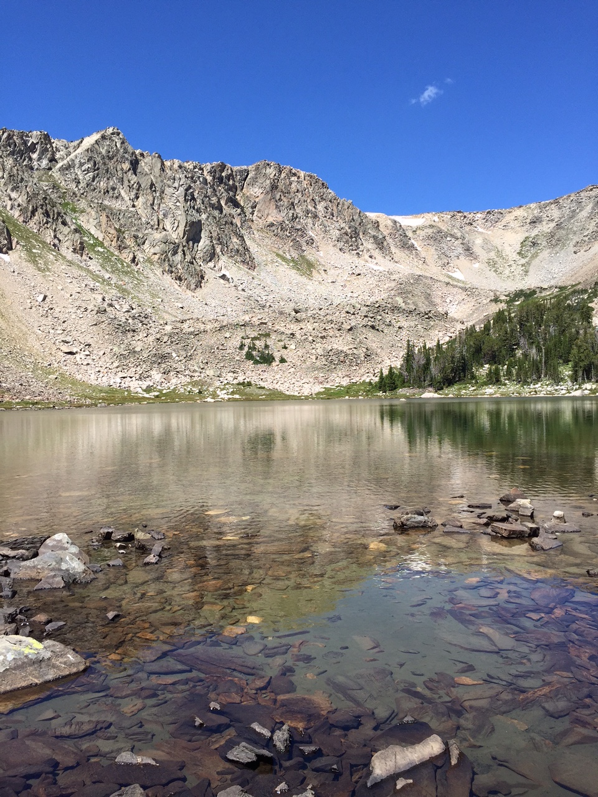
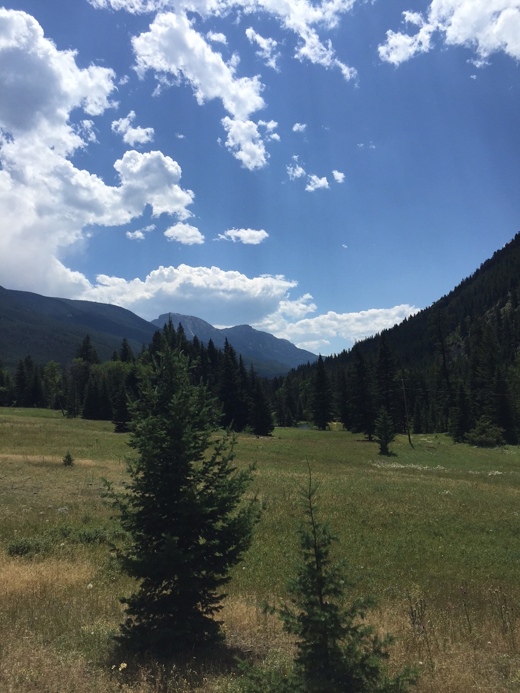
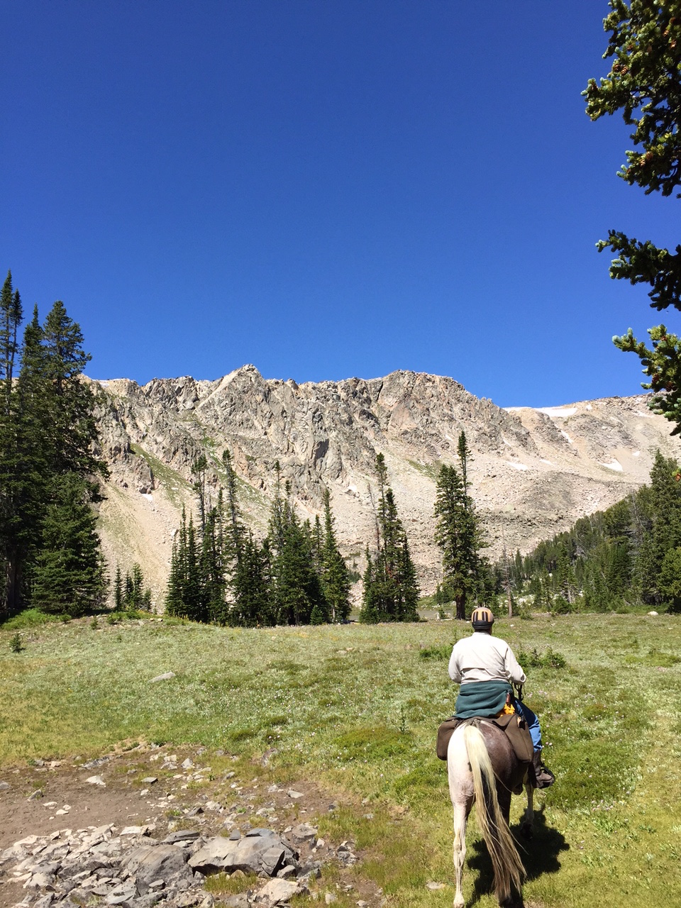
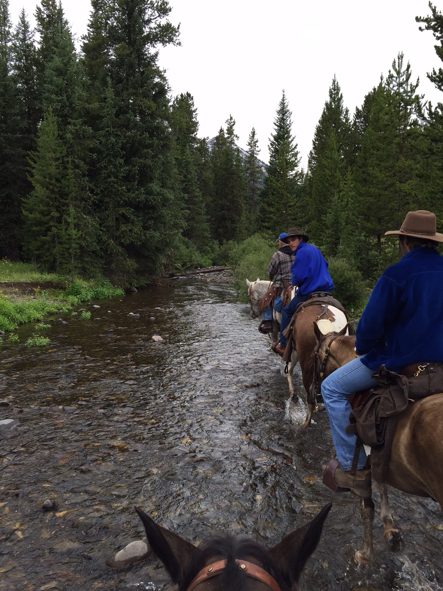
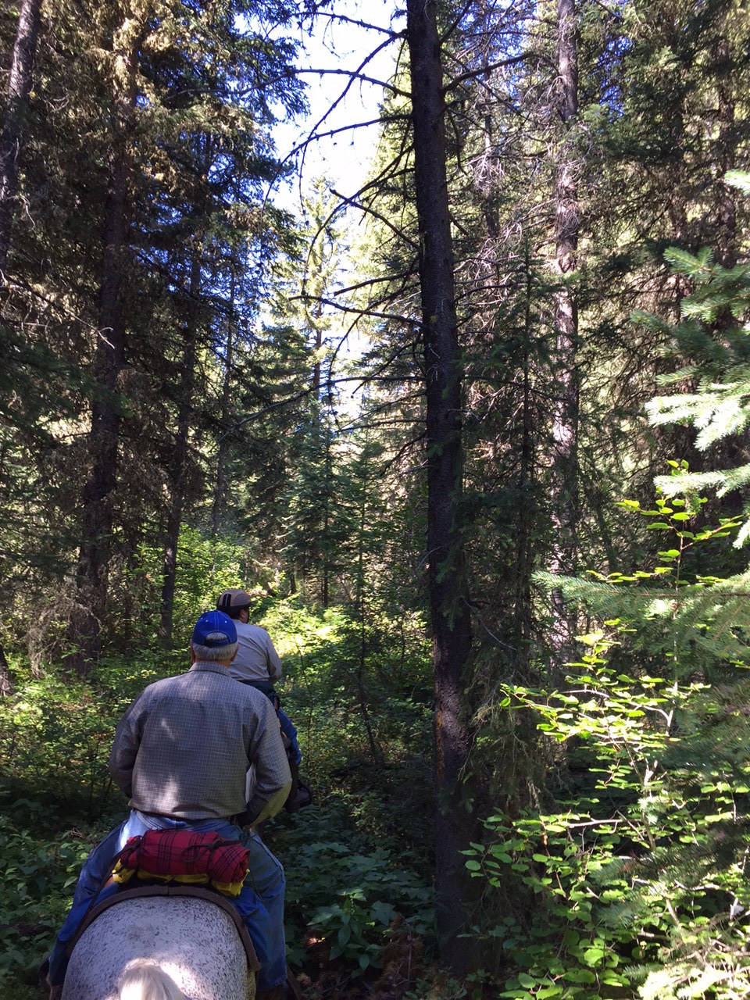
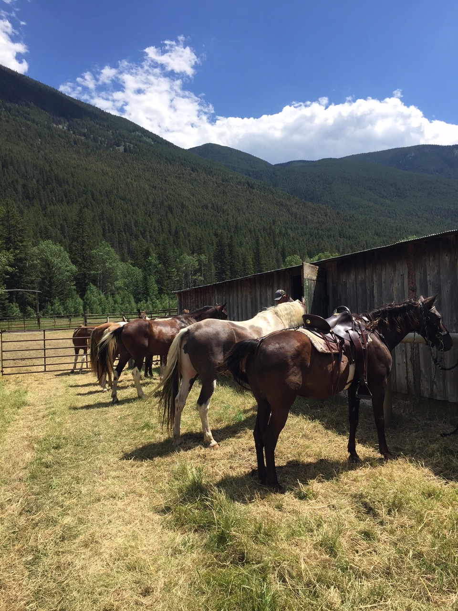
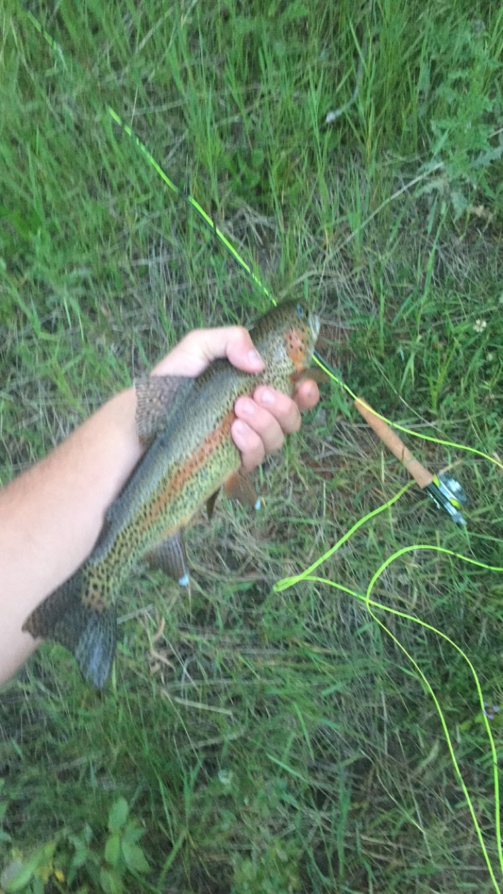

Hello my name is Winston Cowart, and this is my story about the beautiful state of Montana. Ever summer I go to Crystal Springs Ranch for about two weeks during the summer. The ranch is squeezed between mountains that make up the Lower Bolder Valley mountain range. About a mile and a half of the ranch sits along the cold stream water. We explore deep into the mountain range on horse back. We find hidden lakes 13,000 feet in elevation that are as blue as the sky. Going to Montana is a breath of fresh air. A break from the real world.
| The Beautiful Mountians | |||
|---|---|---|---|
|  |  |  |  |
Every morning around 8:00am we would load up the horses. Sometimes we would leave straight from the ranch, while other times we would trailer the horses to other horse back trail heads. The horses would walk for hours up the steep and rocky terrain. A normal horseback ride for us usually lasted about eight to ten hours. It may sound like a long time, but right when you see the crystal blue water of a high summit lake, all the waiting is worth it. We would sit down and eat our ham and cheese sandwiches while we prepared our fly rods.
| Seeing Montana Sights from Horseback | |||
|---|---|---|---|
|  |  |  |  |
|  |
Here is a picture of a beautiful rainbow trout. Most of our fishing took place in the Lower Bolder creek that ran along the ranch. We wear waiters and stand in the middle of the fast flowing waters. It is a challenge to maintain balance while waving the fly back and forth over your head. You can not see your feet through the rapids, and the stones are extremely slippery. To make it even worse, the water is essentially melted snow. Needless to say, you don’t want to fall!
As Van Gogh once said; If you truly love Nature, you will find beauty everywhere.
This is among one of the many reasons I love this state. I am lucky enough to have the opportunity to enjoy spending a part of my summer exploring the nature and its beauty in Montana. Here is a link to my favorite website full of fun and interesting facts about Montana: Montana's Most Interesting Facts. Enjoy!